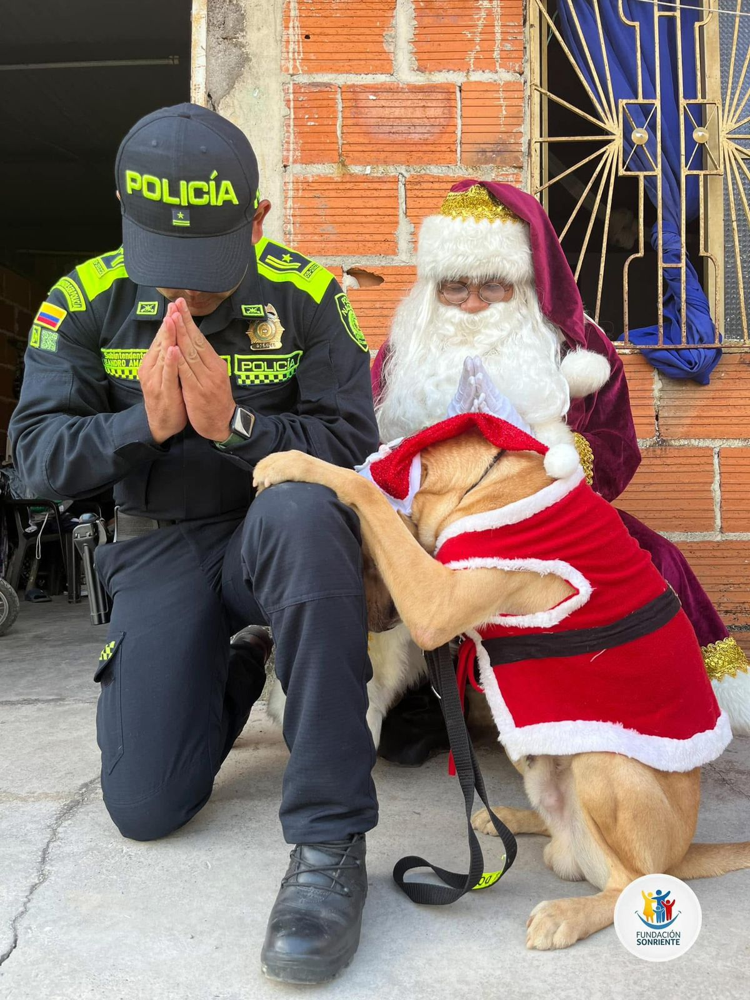
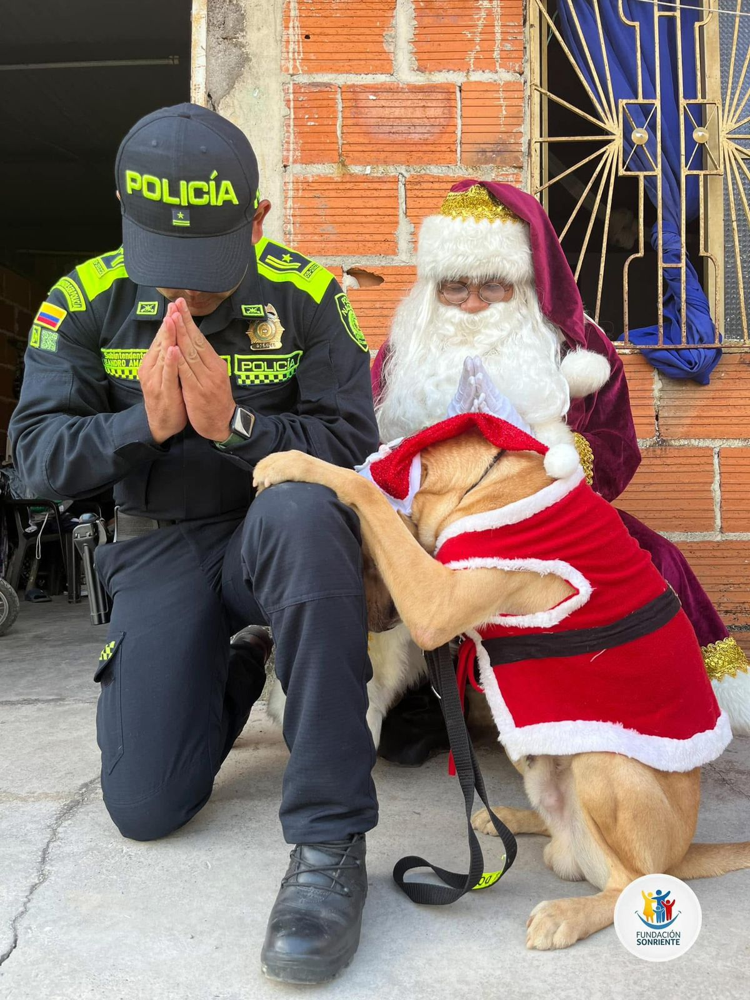

“Tu mano se extiende a través de la Fundación Sonriente para regalar un pedacito de felicidad”.

Mauricio Turriago
CEO Fundación Sonriente
“Tu mano se extiende a través de la Fundación Sonriente para regalar un pedacito de felicidad”.
En Fundación Sonriente trabajamos con el firme propósito de aportar al bienestar y desarrollo integral de la niñez y sus familias. Creemos que cada sonrisa puede transformar una vida, por eso fortalecemos el trabajo social de atención, recreación y prevención desde la primera infancia.
Nuestro equipo está comprometido con generar actividades positivas en un ambiente sano, donde los niños y niñas encuentren espacios de alegría, aprendizaje y protección. Construimos puentes de sociedad que llevan esperanza y felicidad a los más pequeños, especialmente a aquellos que se encuentran en situación de vulnerabilidad.
 

Construir tejido social desde la base de la unión, el respeto, la solidaridad, el amor y la educación a través de la recreación, construyendo un mensaje positivo a las nuevas generaciones, buscando crearles un criterio propio que ayude a forjar hombres y mujeres de bien para la sociedad.
Para el 2030 la Fundación Sonriente, será un proyecto que beneficie a miles de niños y sus familias en estado de vulnerabilidad social, económica y de salud en el departamento de El Meta con la fiel creencia de educar a través de la esperanza, el amor y la felicidad.
Somos un grupo de personas que trabajamos con cariño y compromiso para regalar sonrisas. En Sonriente cada integrante aporta lo mejor de sí, desde organizar actividades y juegos, hasta acompañar a las familias en momentos importantes.